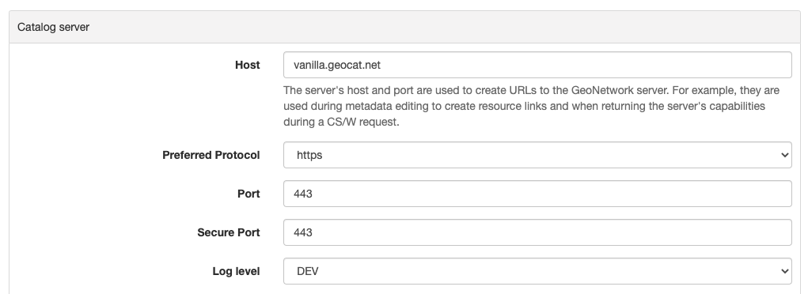

Режим аутентификации
По умолчанию каталог использует внутреннюю базу данных для управления пользователями и аутентификации. Однако доступны и другие механизмы аутентификации:
- Настройка LDAP
- [Настройка иерархии LDAP] (authentication-mode.md#authentication-ldap-hierarchy)
- [Настройка CAS] (authentication-mode.md#authentication-cas)
- [Настройка OpenID Connect в OAUTH2] (authentication-mode.md#authentication-openid)
- [Настройка Keycloak] (authentication-mode.md#authentication-keycloak)
- Настройка Shibboleth
Какой режим использовать, определяется в WEB-INF/config-security/config-security.xml или с помощью переменной среды geonetwork.security.type.
Раскомментируйте соответствующую строку в WEB-INF/config-security/config-security.xml:
Настройка LDAP
Протокол упрощенного доступа к каталогам (LDAP) позволяет GeoNetwork проверять имена пользователей и пароли к удаленному хранилищу идентификационных данных. В реализации LDAP используются элементы пользовательского интерфейса для входа в GeoNetwork по умолчанию.
В настоящее время в GeoNetwork есть 2 подхода к настройке LDAP. Проверьте также альтернативный подход в разделе Настройка иерархии LDAP.
Конфигурация LDAP определена в WEB-INF/config-security/config-security.properties.
Администратор может настроить свою среду, обновив предыдущий файл или переопределив свойства в файле
WEB-INF/config-security/config-security-overrides.properties.
-
Определите LDAP-соединение:
-
ldap.base.provider.url: Указывает порталу, где находится сервер LDAP. Убедитесь, что компьютер с каталогом может подключиться к компьютеру с LDAP-сервером. Также убедитесь, что открыты соответствующие порты и т. д. -
ldap.base.dn: обычно это выглядит примерно так: «dc=[organizationnamehere],dc=org». -
ldap.security.principal/ldap.security.credentials: Определите пользователя администратора LDAP, который будет использоваться для привязки к LDAP. Если не определить, то будет произведена анонимная привязка. Principal - это имя пользователя, а credentials - пароль.
# LDAP security properties ldap.base.provider.url=ldap://localhost:389 ldap.base.dn=dc=fao,dc=org ldap.security.principal=cn=admin,dc=fao,dc=org ldap.security.credentials=ldapЧтобы убедиться в правильности настроек, попробуйте подключиться к LDAP-серверу с помощью приложения LDAP-браузера.
-
-
Определите, где искать пользователей в структуре LDAP для аутентификации:
ldap.base.search.base: это место, где каталог будет искать пользователей для аутентификации.ldap.base.dn.pattern: это отличительное имя пользователя для привязки.{0}заменяется именем пользователя, введенным на экране регистрации.
Настройки авторизации
При использовании LDAP информация о пользователе и привилегии для GeoNetwork могут быть определены из атрибутов LDAP.
Информация о пользователе
Информация о пользователе может быть получена из настройки LDAP для каждого пользовательского атрибута в базе данных каталога,
которому соответствуют атрибуты LDAP. Если атрибут пуст или не определен, можно задать значение по умолчанию.
Значение свойства состоит из двух частей, разделенных символом ,. Первая часть - это имя атрибута,
а вторая часть - значение по умолчанию на случай, если имя атрибута не определено или значение атрибута в LDAP пустое.
Конфигурация следующая:
# Map user information to LDAP attributes and default values
# ldapUserContextMapper.mapping[name]=ldap_attribute,default_value
ldapUserContextMapper.mapping[name]=cn,
ldapUserContextMapper.mapping[surname]=givenName,
ldapUserContextMapper.mapping[mail]=mail,data@myorganization.org
ldapUserContextMapper.mapping[organisation]=,myorganization
ldapUserContextMapper.mapping[kind]=,
ldapUserContextMapper.mapping[address]=,
ldapUserContextMapper.mapping[zip]=,
ldapUserContextMapper.mapping[state]=,
ldapUserContextMapper.mapping[city]=,
ldapUserContextMapper.mapping[country]=,
Настройка прав доступа (привелегий)
Группы пользователей и роли пользователей могут быть установлены как на основе информации LDAP, так и без нее.
По умолчанию управление привилегиями пользователей осуществляется из локальной базы данных.
Если для определения привилегий пользователя необходимо использовать информацию LDAP,
установите для свойства ldap.privilege.import значение "true":
При импорте привилегий из LDAP администратор каталога может принять решение о создании групп, определенных в LDAP и не определенных в локальной базе данных. Для этого установите значение true для следующего свойства:
Чтобы определить, к каким группам принадлежит пользователь и какой профиль является его профилем:
ldapUserContextMapper.mapping[privilege]=groups,sample
# If not set, the default profile is RegisteredUser
# Valid profiles are ADMINISTRATOR, USER_ADMIN, REVIEWER, EDITOR, REGISTERED_USER, GUEST
ldapUserContextMapper.mapping[profile]=privileges,RegisteredUser
Настройка атрибутов:
- атрибут
privilegeсодержит группу, членом которой является данный пользователь. Допускается использование более чем одной группы. - атрибут
profileсодержит профиль пользователя.
Допустимыми ролями пользователя являются:
- Администратор
- Пользователь-администратор (группы)
- Рецензент
- Редактор
- Зарегистрированный пользователь
- Гость
Если атрибут LDAP, содержащий профили, не соответствует списку профилей в каталоге, может быть определено сопоставление:
# Map LDAP custom profiles to catalog profiles. Not used if ldap.privilege.pattern is defined.
ldapUserContextMapper.profileMapping[Admin]=Administrator
ldapUserContextMapper.profileMapping[Editor]=Reviewer
ldapUserContextMapper.profileMapping[Public]=RegisteredUser
Например, в предыдущей конфигурации значение атрибута Admin будет сопоставлено с Administrator (это действительный профиль для каталога).
Атрибут может определять как профиль, так и группу пользователя. Чтобы извлечь эту информацию, можно определить пользовательский шаблон для заполнения привилегий пользователя в соответствии с этим атрибутом:
-
Определите один атрибут для профиля и один для групп в файле
WEB-INF/config-security/config-security-overrides.properties. -
Определите один атрибут для привилегии и задайте пользовательский шаблон:
# In config-security.properties ldap.privilege.pattern=CAT_(.*)_(.*) ldap.privilege.pattern.idx.group=1 ldap.privilege.pattern.idx.profil=2Включите
erдляLDAPUserDetailsContextMapperWithPattern(вWEB-INF/config-security/config-security-ldap.xml).<!--<bean id="ldapUserContextMapper" class="org.fao.geonet.kernel.security.ldap.LDAPUserDetailsContextMapper"> <property name="mapping"> <map/> </property> <property name="profileMapping"> <map/> </property> <property name="ldapBaseDn" value="${ldap.base.dn}"/> <property name="importPrivilegesFromLdap" value="${ldap.privilege.import}"/> <property name="createNonExistingLdapGroup" value="${ldap.privilege.create.nonexisting.groups}"/> <property name="createNonExistingLdapUser" value="${ldap.privilege.create.nonexisting.users}"/> <property name="ldapManager" ref="ldapUserDetailsService"/> <property name="contextSource" ref="contextSource"/> <property name="ldapUsernameCaseInsensitive" value="${ldap.usernameCaseInsensitive:#{true}}"/> </bean>--> <bean id="ldapUserContextMapper" class="org.fao.geonet.kernel.security.ldap.LDAPUserDetailsContextMapperWithPattern"> <property name="mapping"> <map/> </property> <property name="profileMapping"> <map/> </property> <property name="importPrivilegesFromLdap" value="${ldap.privilege.import}"/> <property name="createNonExistingLdapGroup" value="${ldap.privilege.create.nonexisting.groups}" /> <property name="createNonExistingLdapUser" value="${ldap.privilege.create.nonexisting.users}" /> <property name="ldapManager" ref="ldapUserDetailsService" /> <property name="privilegePattern" value="${ldap.privilege.pattern}" /> <property name="groupIndexInPattern" value="${ldap.privilege.pattern.idx.group}"/> <property name="profilIndexInPattern" value="${ldap.privilege.pattern.idx.profil}"/> <property name="contextSource" ref="contextSource" /> </bean> -
Определите пользовательское место для извлечения группы и роли (нет поддержки комбинации группа/роль) (используйте LDAPUserDetailsContextMapperWithProfileSearch в
config-security.xml).ldap.privilege.search.group.attribute=cn ldap.privilege.search.group.object=ou=groups #ldap.privilege.search.group.query=(&(objectClass=*)(memberUid=uid={0},${ldap.base.search.base},${ldap.base.dn})(cn=EL_*)) ldap.privilege.search.group.queryprop=memberuid ldap.privilege.search.group.query=(&(objectClass=*)(memberUid=uid={0},${ldap.base.search.base},${ldap.base.dn})(|(cn=SP_*)(cn=EL_*))) ldap.privilege.search.group.pattern=EL_(.*) ldap.privilege.search.privilege.attribute=cn ldap.privilege.search.privilege.object=ou=groups ldap.privilege.search.privilege.query=(&(objectClass=*)(memberUid=uid={0},${ldap.base.search.base},${ldap.base.dn})(cn=SV_*)) ldap.privilege.search.privilege.pattern=SV_(.*)Атрибут LDAP может содержать следующую конфигурацию для определения различных типов пользователей, например:
cat_privileges=CAT_ALL_Administrator -- Define a reviewer for the group GRANULAT cat_privileges=CAT_GRANULAT_Reviewer -- Define a reviewer for the group GRANULAT and editor for MIMEL cat_privileges=CAT_GRANULAT_Reviewer cat_privileges=CAT_MIMEL_Editor -- Define a reviewer for the group GRANULAT and editor for MIMEL and RegisteredUser for NATURA2000 cat_privileges=CAT_GRANULAT_Reviewer cat_privileges=CAT_MIMEL_Reviewer cat_privileges=CAT_NATURA2000_RegisteredUser -- Only a registered user for GRANULAT cat_privileges=CAT_GRANULAT_RegisteredUser
Синхронизация
Задача синхронизации заключается в удалении пользователей LDAP, которые могут быть удалены. Например:
- T0: Пользователь A входит в каталог. В базе данных пользователей создается локальный пользователь A.
- T1: Пользователь A удаляется из LDAP (пользователь A больше не может войти в каталог).
- T2: Задача синхронизации проверит, все ли локальные пользователи LDAP существуют в LDAP:
- Если пользователь не владеет никакими записями, он будет удален.
- Если пользователь владеет записями метаданных, в систему регистрации каталога будет записано предупреждение. Владелец записи должен быть изменен на другого пользователя, прежде чем задача сможет удалить текущего владельца.
По умолчанию задача запускается один раз в день. Это можно изменить в следующем свойстве:
Следующие свойства позволяют дополнительно настроить процесс синхронизации:
ldap.sync.user.search.base=${ldap.base.search.base}
ldap.sync.user.search.filter=(&(objectClass=*)(mail=*@*)(givenName=*))
ldap.sync.user.search.attribute=uid
ldap.sync.group.search.base=ou=groups
ldap.sync.group.search.filter=(&(objectClass=posixGroup)(cn=EL_*))
ldap.sync.group.search.attribute=cn
ldap.sync.group.search.pattern=EL_(.*)
Отладка
В случае сбоя подключения попробуйте увеличить уровень ведения журнала для LDAP в WEB-INF/classes/log4j.xml:
Или в настройках конфигурации временно установите Уровень логирования на DEV:

Настройка LDAP - Иерархии
В середине 2020 года был введен несколько иной метод настройки LDAP.
Это расширяет инфраструктуру исходной конфигурации (исходные конфигурации по-прежнему работают без каких-либо изменений).
Прежде чем приступить к настройке, вам необходимо знать;
- URL-адрес вашего сервера LDAP
- Имя пользователя/пароль для входа на сервер LDAP (для выполнения запросов)
- Запрос LDAP для поиска пользователя (с учетом того, что он вводит на экране входа в систему)
- Подробные сведения о том, как преобразовать атрибуты пользователя LDAP в атрибуты пользователя GeoNetwork
- Запрос LDAP для поиска групп, членом которых является пользователь
- Как преобразовать группу LDAP в группу/роль GeoNetwork
Note
Существует [видеочат разработчика] (https://www.youtube.com/watch?v=f8rvbEdnE-g), в котором подробно рассказывается о том, как настроить LDAP, включая настройку предварительно настроенного сервера LDAP (с использованием Apache Directory Studio) для тестирования/отладки/обучения.
Note
Следует ли мне использовать иерархию или исходную конфигурацию?
Если уже есть существующая (исходная) конфигурация, нет необходимости переходить на новую. Большая часть кода в обоих вариантах одинакова.
Если вы запускаете новую конфигурацию, я бы рекомендовал использовать иерархическую конфигурацию. Это немного проще и поддерживается тестовыми примерами и инфраструктурой тестирования. Также поддерживается протокол Ldap, в котором пользователи/ группы находятся в нескольких каталогах.
Настройка LDAP-бинов (Иерархия)
GeoNetwork поставляется с образцом конфигурации LDAP,
который можно использовать в Apache Directory Studio для создания того же сервера LDAP, который использовался в тестовых примерах.
Существует также пример конфигурации GeoNetwork, которая подключается к этому серверу LDAP.
Пожалуйста, ознакомьтесь с инструкциями в разделе core-geonetwork/blob/master/core/src/test/resources/org/fao/geonet/kernel/security/ldap/README.md
или в видео разработчика.
Note
Чтобы использовать эту конфигурацию, откомментируйте строку «web/src/main/webapp/WEB-INF/config-security/config-security.xml.
-
Сконфигурируйте
ceбин со ссылкой на LDAP-сервер и пользователем, который может выполнять LDAP-запросы.<bean id="contextSource" class="org.springframework.security.ldap.DefaultSpringSecurityContextSource"> <constructor-arg value=“ldap://localhost:3333/dc=example,dc=com"/> <property name="userDn" value="cn=admin,ou=GIS Department,ou=Corporate Users,dc=example,dc=com"/> <property name="password" value="admin1"/> </bean> -
Сконфигурируйте
ceбин со ссылкой на LDAP-сервер и пользователем, который может выполнять LDAP-запросы.Примечание: Установите
eeвue, чтобы выполнить рекурсивный поиск в LDAP. Используйтеse, чтобы контролировать, в какой директории начинается поиск («» означает начинать с корня). -
Настройте
erбин для преобразования атрибутов пользователя LDAP в атрибуты пользователя GeoNetwork (см. исходную документацию по настройке, выше).ПРИМЕЧАНИЕ: Часть
ueсостоит из двух частей. Первая часть - это имя атрибута LDAP (может быть пустым). Вторая часть - значение по умолчанию, если атрибут LDAP отсутствует или пуст (см. исходную документацию по конфигурации, выше).<bean id="ldapUserContextMapper" class=“LDAPUserDetailsContextMapperWithProfileSearchEnhanced"> <property name="mapping"> <map> <entry key="name" value="cn,"/> <entry key="surname" value="sn,"/> <entry key="mail" value="mail,"/> <entry key="organisation" value=","/> <entry key="address" value=","/> <entry key="zip" value=","/> <entry key="state" value=","/> <entry key="city" value=","/> <entry key="country" value=","/> <entry key="profile" value=",RegisteredUser"/> <entry key="privilege" value=",none"/> </map> </property> </bean> -
Продолжайте настройку
erбина, чтобы LDAP мог также предоставлять групповые/профильные роли для пользователя.ПРИМЕЧАНИЕ:
ry- это каталог LDAP, с которого будет начинаться запрос членства («» означает начало с корня LDAP).<bean id="ldapUserContextMapper" class="LDAPUserDetailsContextMapperWithProfileSearchEnhanced"> <property name="importPrivilegesFromLdap" value=“true"/> <!-- typically, don't want GN to modify the LDAP server! --> <property name="createNonExistingLdapGroup" value="false" /> <property name="createNonExistingLdapUser" value="false" /> <property name="ldapManager" ref="ldapUserDetailsService" /> <property name="membershipSearchStartObject" value=""/> <property name="ldapMembershipQuery" value="(&(objectClass=*)(member=cn={2})(cn=GCAT_*))"/> </bean> -
Продолжайте настройку
erбина, чтобы роли LDAP можно было преобразовать в группы/профили GeoNetwork.ПРИМЕЧАНИЕ: Вы можете использовать несколько
rs.
В настоящее время существует два способа преобразования группы LDAP в группы/профайлы GeoNetwork.
-
Способ
er, который работает так же, как и оригинальная конфигурация LDAP. Он использует регулярное выражение для разбора имени группы LDAP в группу/профиль GeoNetwork. Это преобразует роль LDAPORв группу GeoNetworkALс профилемr.<bean id="ldapRoleConverterGroupNameParser" class="LDAPRoleConverterGroupNameParser"> <property name="ldapMembershipQueryParser" value="GCAT_(.*)_(.*)"/> <property name="groupIndexInPattern" value="1"/> <property name="profileIndexInPattern" value=“2"/> <property name="profileMapping"> <map> <entry key="ADMIN" value="Administrator"/> <entry key="EDITOR" value="Editor"/> </map> </property> </bean> -
Существует также более прямой способ с использованием
er. Это напрямую преобразует имя группы LDAP в список групп/профилей GeoNetwork.<bean id=“ldapRoleConverterGroupNameParser" class="LDAPRoleConverterGroupNameConverter"> <property name="convertMap"> <map> <entry> <key> <value>HGIS_GeoNetwork_Admin</value> </key> <list> <bean class="org.fao.geonet.kernel.security.ldap.LDAPRole"> <constructor-arg name="groupName" type="java.lang.String" value="myGroup"/> <constructor-arg name="profileName" type="java.lang.String" value="Administrator"/> </bean> </list> </entry> <entry> <key> <value>HGIS_GeoNetwork_Editor</value> </key> <list> <bean class="org.fao.geonet.kernel.security.ldap.LDAPRole"> <constructor-arg name="groupName" type="java.lang.String" value=“myGroup"/> <constructor-arg name="profileName" type="java.lang.String" value="Editor"/> </bean> </list> </entry> </map> </property> </bean>
Настройка CAS
Чтобы включить CAS, настройте аутентификацию, включив WEB-INF/config-security/config-security-cas.xml в WEB-INF/config-security/config-security.xml,
откомментировав следующие строки:
Для управления пользователями CAS может использовать либо LDAP, либо базу данных. Чтобы использовать базу данных, откомментируйте следующие строки:
Конфигурация CAS определена в файле WEB-INF/config-security/config-security.properties.
Можно настроить свое окружение, обновив предыдущий файл или определив переопределения свойств в файле WEB-INF/config-security/config-security-overrides.properties:
cas.baseURL=https://localhost:8443/cas
cas.ticket.validator.url=${cas.baseURL}
cas.login.url=${cas.baseURL}/login
cas.logout.url=${cas.baseURL}/logout?url=${geonetwork.https.url}/
Настройка OAUTH2 OpenID Connect
OAUTH2 OpenID_Connect - это система аутентификации и авторизации, основанная на OAUTH2. Плагин OpenID Connect от Geonetwork был протестирован с Keycloak и Azure AD, но должен работать с любым провайдером.
Основные шаги по настройке:
- Настройте IDP-сервер (например, Keycloak или Azure AD).
- Убедитесь, что ID-токен предоставляет информацию о роли/группе.
- Авторизуйте URL-адреса Geonetwork для перенаправления (например,
http://localhost:8080/geonetwork/login/oauth2/code/geonetwork-oicd). - Запишите идентификатор клиента
- Запишите секрет клиента
- Получение документа метаданных JSON сервера
- Настройка Geonetwork с помощью переменных окружения
GEONETWORK_SECURITY_TYPE=openidconnect.OPENIDCONNECT_CLIENTSECRET=\...(с вашего IDP сервера)OPENIDCONNECT_CLIENTID=\...(с вашего IDP-сервера)OPENIDCONNECT_SERVERMETADATA_JSON_TEXT='\...'(текст JSON-документа метаданных вашего сервера)OPENIDCONNECT_IDTOKENROLELOCATION=\...(расположение ролей пользователя в ID-токене)
Плагин Open ID Connect от Geonetwork имеет множество настроек - смотрите файлы WEB-INF/config-security/config-security-openidconnect.xml
и WEB-INF/config-security/config-security-openidconnect-overrides.properties.
Переменная окружения и ее значение
GEONETWORK_SECURITY_TYPE.
Должно быть ct.
OPENIDCONNECT_CLIENTID
Имя клиента/приложения, настроенного на сервере OpenID.
OPENIDCONNECT_CLIENTSECRET.
Секрет et, который вы настроили на сервере OpenID.
OPENIDCONNECT_SERVERMETADATA_CONFIG_URL.
URL-адрес JSON-документа метаданных внешнего сервера OIDC. Обычно он находится по адресу /.well-known/openid-configuration на сервере IDP.
Note
Это будет загружать конфигурацию сервера при каждом запуске GeoNetwork,
что может быть связано с проблемой безопасности. Для безопасности используйте ps URL.
OPENIDCONNECT_SERVERMETADATA_JSON_TEXT.
Должен быть текстом конфигурации метаданных вашего сервера OpenID (JSON).
OPENIDCONNECT_SERVERMETADATA_FNAME.
Вместо того чтобы помещать конфигурацию метаданных сервера OpenID в виде текста в переменную (OPENIDCONNECT_SERVERMETADATA_JSON_TEXT),
следует поместить содержимое JSON в файл и сослаться на него с помощью этой переменной (например, /WEB-INF/config-security/openid-configuration.json)
OPENIDCONNECT_IDTOKENROLELOCATION.
Где в ID-токене хранятся роли/группы пользователей (т.е. «groups», «roles» или «resource_access.gn-key.roles»)
OPENIDCONNECT_ROLECONVERTER
Обеспечивает простое преобразование ролей с сервера OpenID в роли Geonetwork.
Т.е. GeonetworkAdmin=Administrator,GeonetworkEditor=Editor.
Это преобразует «GeonetworkAdmin» (с сервера OpenID) в роль Geonetwork «Administrator».
Обратите
Как и в плагине keycloak, вы можете использовать имена ролей/групп вида «group:role» для назначения пользователя группе Geonetwork и уровню прав.
OPENIDCONNECT_MINIMUMPROFILE.
Каждому пользователю, который аутентифицируется на сервере OpenID, будет присвоена эта роль.
По умолчанию это RegisteredUser.
OPENIDCONNECT_USERPROFILEUPDATEENABLED.
Когда пользователь входит в систему, обновлять его профиль Geotwork на основе ID-токена сервера OpenID.
По умолчанию «true».
OPENIDCONNECT_USERGROUPUPDATEENABLED.
При входе пользователя в систему обновлять его разрешения на группы/роли в Geotwork.
По умолчанию «true».
OPENIDCONNECT_SCOPES.
Ограничение запрашиваемого диапазона доступа к серверу OpenID.
По умолчанию «openid email profile» и «openid email profile offline_access» (для токенов на предъявителя).
OPENIDCONNECT_LOGINTYPE.
Как Geonetwork будет работать с пользователями, которые не вошли в систему.
По умолчанию «LINK» - пользователи могут нажать на ссылку «login» на главной странице.
«AUTOLOGIN» - не предусмотрена форма входа, которая будет автоматически вводить пользователя в систему, когда это возможно.
OPENIDCONNECT_LOGSENSITIVE_INFO.
«true» или „false“ (по умолчанию)
Журналы: CODE, ACCESS TOKEN, ID TOKEN, результат userinfo конечной точки и вычисленные полномочия GeoNetwork.
ЗАПИСЬ ЭТОЙ ИНФОРМАЦИИ В ЖУРНАЛ, ВЕРОЯТНО, ПРЕДСТАВЛЯЕТ СОБОЙ РИСК ДЛЯ БЕЗОПАСНОСТИ И ЛИЧНОЙ ИНФОРМАЦИИ. НЕ ВКЛЮЧАЙТЕ ЭТУ ФУНКЦИЮ В СИСТЕМЕ, КОТОРАЯ ДЕЙСТВИТЕЛЬНО ИСПОЛЬЗУЕТСЯ.
Следует избегать регистрировать очень чувствительную информацию, а также полный токен доступа или id (только часть требований). Следует регистрировать одноразовый CODE, но он уже должен быть деактивирован сервером до того, как пользователь его зарегистрирует.
Токен доступа, userinfo и id-токен содержат конфиденциальную информацию (например, реальные имена, адреса электронной почты, etc...).
Конфигурация сервера Keycloak
Полное описание шагов по настройке keycloak выходит за рамки этого документа, но это должно послужить руководством.
Здесь описана настройка keycloak на основе другого OpenID IDP (например, Azure AD). В keycloak:
- Создайте царство (например,
lm). - Создайте openid-клиента (например,
nt). Это ваш ClientID.- Корневой URL:
http://localhost:7777/geonetwork(это корневой URL GN). - Допустимые URI перенаправления:
http://localhost:7777/geonetwork/*. - Тип доступа: Конфиденциальный .
- На вкладке
lsполучите секрет (это ваш клиентский секретный ключ) - На вкладке
esсоздайте несколько ролей: Администратор, Редактор, Рецензент, Зарегистрированный гость
- Корневой URL:
Нужно иметь идентификатор клиента Keycloak («myclient») и секретный ключ клиента.
Конфигурационный JSON доступен по адресу https://YOUR_KEYCLOAK_HOST/realms/{YOUR REALM NAME}/.well-known/openid-configuration
Переменные окружения будут выглядеть следующим образом:
GEONETWORK_SECURITY_TYPE=openidconnect
OPENIDCONNECT_CLIENTSECRET='...'
OPENIDCONNECT_CLIENTID='...'
OPENIDCONNECT_SERVERMETADATA_JSON_TEXT='...big json text...'
OPENIDCONNECT_IDTOKENROLELOCATION='resource_access.{your client id}.roles'
Конфигурация Azure AD
Существует два способа настройки Azure AD. Первый - с помощью пользователей и групп (более традиционный метод LDAP) или с помощью ролей приложений.
С помощью пользователей и групп
Настройте приложение Azure:
- Создайте новое
on. - Используйте
http://localhost:8080/geonetwork/login/oauth2/code/geonetwork-oicdв качестве URI перенаправления - В разделе «Сертификаты и секреты» добавьте новый секрет и запишите его (убедитесь, что вы получаете значение секрета, а не идентификатор объекта).
- Убедитесь, что группы находятся в ID-токене - на вкладке «Manifest» отредактируйте JSON так, чтобы «groupMembershipClaims»: «SecurityGroup».
- На странице сводки получите идентификатор приложения (клиента)
- На странице сводки выберите «Конечные точки» (вверху) и получите текст JSON из документа «OpenID Connect metadata document» Endpoints.
Настройте пользователей и группы:
- В Azure AD перейдите в раздел «Группы
- Добавьте новые группы - «geonetworkAdmin», «geonetworkReviewer» и т. д.... Запишите название и Object ID группы.
- Отредактируйте пользователя, выберите «Группы» и добавьте его в соответствующую группу.
Переменные окружения будут выглядеть следующим образом:
GEONETWORK_SECURITY_TYPE=openidconnect
OPENIDCONNECT_CLIENTSECRET='...'
OPENIDCONNECT_CLIENTID='...'
OPENIDCONNECT_SERVERMETADATA_JSON_TEXT='...big json text...'
OPENIDCONNECT_IDTOKENROLELOCATION='groups'
OPENIDCONNECT_ROLECONVERTER='3a94275f-7d53-4205-8d78-11f39e9ffa5a=Administrator,d93c6444-feee-4b67-8c0f-15d6796370cb=Reviewer'
Note
Роли находятся в части «roles» ID-токена.
Note
OPENIDCONNECT_ROLECONVERTER преобразует идентификатор объекта группы Azure AD в роль Geonetwork Role.
Роли приложений
Настройте приложение Azure:
- Создайте новое приложение Enterprise
- Используйте
http://localhost:8080/geonetwork/login/oauth2/code/geonetwork-oicdв качестве URI перенаправления - В разделе «Сертификаты и секреты» добавьте новый секрет и запишите его (убедитесь, что вы получаете значение секрета, а не идентификатор объекта).
- Убедитесь, что группы находятся в ID-токене - на вкладке «Manifest» отредактируйте JSON так, чтобы «groupMembershipClaims»: «ApplicationGroup».
- На странице сводки получите идентификатор приложения (клиента)
- На странице сводки выберите «Конечные точки» (вверху) и получите текст JSON из документа «OpenID Connect metadata document» Endpoints
Настройте роли приложения:
- В созданном вами приложении перейдите в раздел «Роли приложения».
- Добавьте новые группы - «Редактор», «Рецензент» и т.д....
Назначьте пользователей:
- Перейдите в Azure AD, Enterprise Application, затем в созданное вами приложение.
- Выберите «Назначить пользователей и группы».
- Нажмите кнопку «Добавить пользователя/группу» (вверху).
- Нажмите «Нет выбранных» (в разделе «Пользователи») и выберите несколько пользователей
- Нажмите «Не выбрано» (в разделе «Выбрать роль») и выберите несколько ролей.
- Настройте всех пользователей с ролями
Ваши переменные окружения будут выглядеть следующим образом:
GEONETWORK_SECURITY_TYPE=openidconnect
OPENIDCONNECT_CLIENTSECRET='...'
OPENIDCONNECT_CLIENTID='...'
OPENIDCONNECT_SERVERMETADATA_JSON_TEXT='...big json text...'
OPENIDCONNECT_IDTOKENROLELOCATION='roles'
Note
Роли находятся в части «roles» ID-токена.
Note
Как правило, преобразование роли не требуется, поскольку имя роли будет использоваться в ID-токене.
OIDC Bearer токены
Токены носителя также поддерживаются - вы можете прикрепить токен носителя JWT к любому запросу, установив HTTP-заголовок следующим образом:
Bearer Tokens are mostly used for automated (desktop or application) API calls - real users should just login normally using OIDC.
Токены носителя в основном используются для автоматизированных (настольных или прикладных) вызовов API - реальные пользователи должны просто входить в систему обычным образом, используя OIDC.
- Настройте конфигурацию OIDC (см. Настройка OAUTH2 OpenID Connect).
- Установите конфигурацию токена носителя OIDC (см. Конфигурация).
-
Получите токен Bearer с сервера OIDC. Это самая сложная часть, и есть несколько способов сделать это. Один из способов, который используется - это рабочий процесс OAuth 2.0 Device Authorization Grant («Device Flow»).
-
Прикрепите его к заголовкам запроса (см. OIDC Bearer Tokens).
- Выполните защищенные запросы к API Geonetwork.
Этот способ был протестирован с Keycloak и Azure AD. Он должен работать и с другими сервисами OIDC на основе JWT.
Проверка
Токен проверяется тремя основными способами:
-
Токен носителя будет использоваться для доступа к конечной точке
fo(«проверка токена»), указанной в конфигурации OIDC. Это означает, что IDP проверяет токен (по крайней мере, его подпись и срок действия). -
Токен на предъявителя (JWT) будет проверен на то, что его аудитория совпадает с нашей конфигурацией OIDC. Это гарантирует, что кто-то не получит токен из другого сервиса и не попытается использовать его здесь. Смотрите
AudienceAccessTokenValidator.java. -
Токен на предъявителя (JWT) будет проверен на то, что субъект JWT и
fo(возвращаемый от IDP) совпадают. В нашем случае это не должно быть проблемой, но спецификация OAUTH2 рекомендует такую проверку. СмотритеSubjectAccessTokenValidator.java.
Настройка
Настройте OIDC, как указано выше - убедитесь, что все работает.
Вместо GEONETWORK_SECURITY_TYPE=openidconnect, используйте GEONETWORK_SECURITY_TYPE=openidconnectbearer.
Внутри WEB-INF/config-security/config-security-openidconnectbearer.xml:
- Если вы используете keycloak (настроенный с помощью Groups в ответе
fo), то откомментируйте бобerи закомментируйте бобer. - Если вы используете Azure AD (MS Graph API для групп пользователей), то откомментируйте боб
erи закомментируйте бобer.
Самый простой способ проверить - получить токен Bearer, а затем с помощью плагина для браузера добавить Авторизация: Bearer <token> ко всем запросам.
Когда пользователь зайдёт в Geonetwork, он должен увидеть себя вошедшим в систему с соответствующими правами.
Другие провайдеры
Это было протестировано с Azure AD (группы в MS Graph API) и KeyCloak (группы в fo).
Для других IDP, возможно, придется внести некоторые изменения.
- Убедитесь, что
orиorкорректно работают для ваших JWT-токенов. - Убедитесь, что группы пользователей доступны - см. интерфейс
erи две его реализации -erиer.
Настройка Keycloak
Keycloak - это программное решение для хранения данных аутентификации, объединения пользователей, посредничества в идентификации и социального входа. GeoNetwork может быть настроен на использование экземпляра keycloak для аутентификации.
Установите keycloak из инструкции или воспользуйтесь этим примером установки в docker https://www.keycloak.org/getting-started/getting-started-docker.
Детали Keycloak определяются через переменные окружения
KEYCLOAK_AUTH_SERVER_URL={keycloak url}
KEYCLOAK_REALM={realm name}
KEYCLOAK_RESOURCE={client name}
KEYCLOAK_SECRET={client secret}
KEYCLOAK_DISABLE_TRUST_MANAGER={true|false}
Можно установить более подробные настройки keycloak, отредактировав файл WEB-INF/config-security/keycloak.json.
Конфигурация URL-адреса клиента Geonetwork
Убедитесь, что при настройке клиента был установлен правильный URL
для перенаправления на установку geonetwork, т.е. https://localhost:8443/geonetwork/*.
При неправильной настройке вы можете получить ошибку, указывающую на то, что был задан неверный URL перенаправления.
Также если вы хотите протестировать выход из обратного канала клиента, убедитесь,
что URL-адрес администратора также установлен на установку geonetwork.
Пример настройки пользователя/роли/группы
Пример настройки роли
В настройках роли клиента (клиенты -> мой_клиент -> роли). Добавьте следующие роли
Administrator
RegisteredUser
Guest
sample:UserAdmin
sample:Reviewer
sample:Editor
sample:RegisteredUser
Образец конфигурации группы
- Перейдите в раздел «Группы keycloak» (левое меню).
- Создайте новую группу под названием «Администратор».
- Отредактируйте группу. Перейдите в Role Mappings -> Client Roles (myclient) -> выберите роли администратора и нажмите кнопку «Add selected» Любой пользователь, присоединенный к группе Administrator, будет администратором сети geonetwork.
Пример конфигурации пользователя
- Перейдите в раздел «Пользователи keycloak» (левое меню).
- Добавьте или выберите существующего пользователя. Затем перейдите к этому пользователю.
- Перейдите в раздел «Сопоставление ролей» -> «Роли клиента» (myclient) -> выберите доступные роли для применения и нажмите «Добавить выбранные» или перейдите в раздел «Группы» -> «Доступные группы» -> выберите группу «Администратор» и нажмите «Присоединиться».
Аналогичная настройка описана для geoserver в документации geoserver.
Настройка EU Login
EU Login - это центральный механизм входа в систему Европейской комиссии. Можно включить вход в систему с помощью этого центрального сервиса в случае, если ваши предполагаемые пользователи имеют или могут получить EU Login.
Чтобы включить EU Login, настройте аутентификацию, включив WEB-INF/config-security/config-security-ecas.xml в WEB-INF/config-security/config-security.xml, откомментировав следующую строку:
Для EU-login требуется плагин ecas-plugin, предоставленный Европейским Союзом. Плагин ecas доступен через CITnet для различных java-контейнеров, таких как Tomcat и JBoss.
Для tomcat добавьте в папку tomcat lib два файла: ecas-tomcat-x.y.z.jar и log4j-x.y.z.jar.
В папку lib скопируйте две папки из eulogin-tomcat-x.y.z-config.zip: org/apache/catalina/authenticator и org/apache/catalina/startup.
Папка mbeans содержит файл mbeans-descriptors.xml. Папка startup содержит файл Authenticators.properties.
Убедитесь, что JDK доверяет сертификатам ECAS,
иначе импортируйте их в хранилище ключей JVM.
Конфигурация EU Login определена в WEB-INF/config-security/config-security.properties.
Можно настроить свое окружение, обновив предыдущий файл или определив переопределения свойств
в файле WEB-INF/config-security/config-security-overrides.properties:
Перезапустите службу и проверьте механизм аутентификации.
Настройка Shibboleth
Каталог может работать в федерации, защищенной SAML. Shibboleth должен быть установлен в Apache,
как описано здесь.
Доступ к каталогу осуществляется через Apache. Настройте аутентификацию Shibboleth, включив WEB-INF/config-security/config-security-shibboleth.xml
в WEB-INF/config-security/config-security.xml. Затем вы можете настроить свое окружение в файле config-security-shibboleth-overrides.properties.